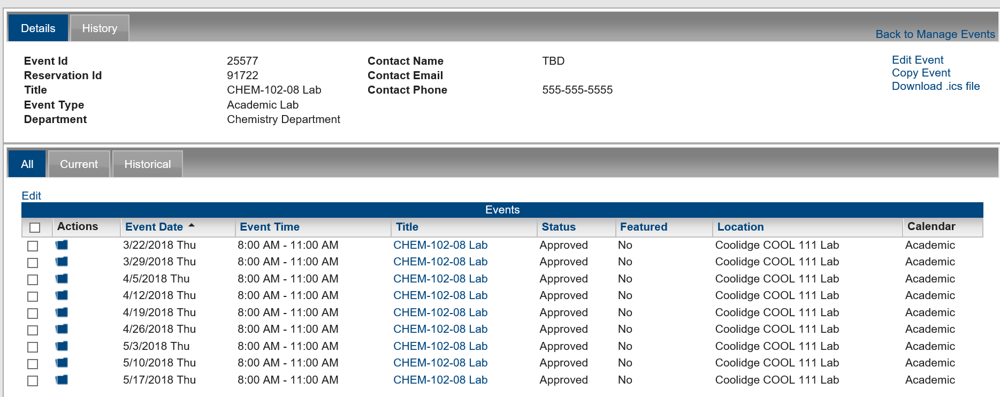

You can manage events from the Event Summary page or through the Manage Events page.
From the Manage Events page, or the Edit icon on the Event Details page, double click on an event to open the Event Summary page. The Details tab on this page summarizes the current details for the event. The History tab displays the history for the event. In addition, the Event Summary page has three tabs that show the dates that are associated with the event:
Event Summary page, Details Tab

When a guest or user requests to submit an event to a calendar, as the EMS Master Calendar manager, you are responsible for managing the event in your calendar system. See Also:
Managing event requests in EMS Master Calendar consists of:
You can also:
When the Manage Events page first opens, the list of events that appears is a list of all pending events for all calendars to which you have access as a Master Calendar manager. To manage events with different statuses, you must refine this list by filtering it by specific criteria.
NOTE: For all procedures in this section, you must be logged in either as a Calendar Manager or as the site administrator. If you are logged in as the Calendar Manager, or the site administrator, you can always open the event by clicking the event title on the Manage Events page. You can then easily review the event specifics as well as edit the event details. See Also: